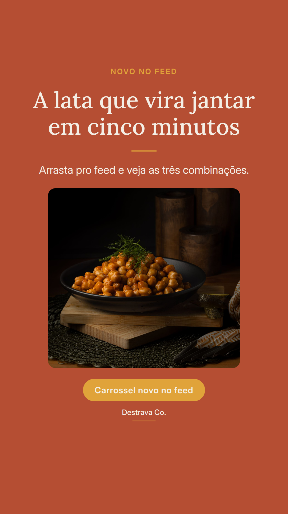
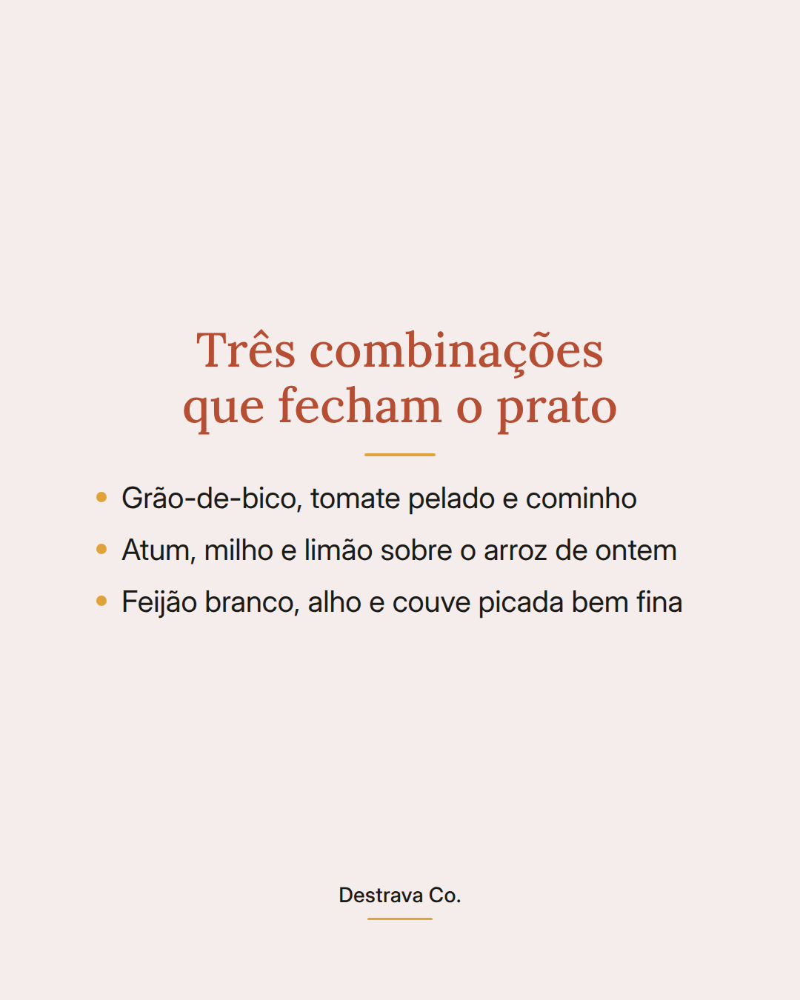
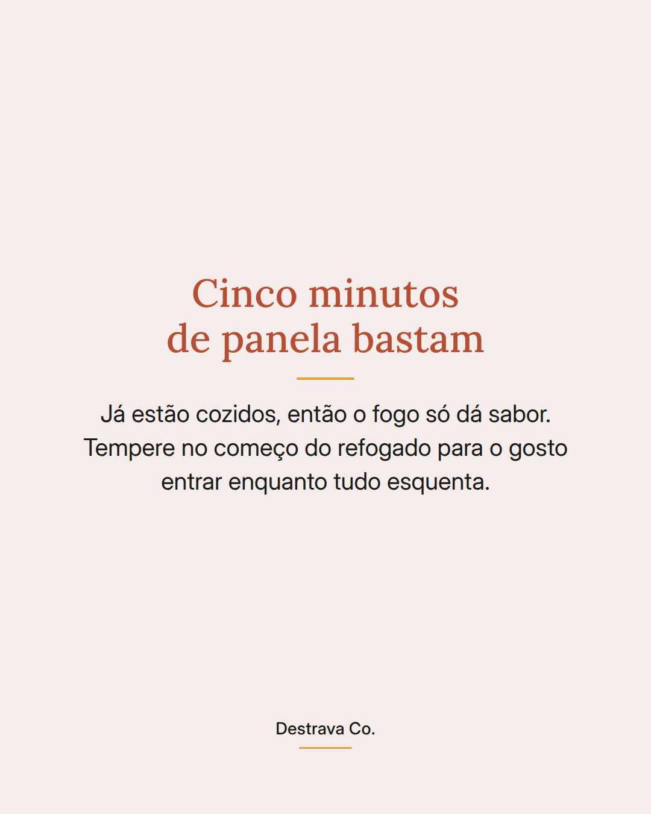

Jantar em cinco minutos começa na lata que já está na sua despensa.
Grão-de-bico, feijão branco, atum, milho e tomate pelado chegam cozidos: metade do trabalho já foi feita por você antes mesmo de abrir a panela.
O truque é escorrer, enxaguar e secar. Sem a salmoura, o sabor fica limpo e o grão doura de verdade numa frigideira quente em vez de cozinhar de novo.
Como o ingrediente já está pronto, o fogo serve só pra dar gosto. Tempere no começo do refogado, junte um verde picado fino e sirva com o arroz de ontem.
Salva esse post pra lembrar na próxima correria e manda pra quem sempre abre a geladeira sem ideia. Se quiser mais jantares rápidos, o PDF com vinte receitas de até quinze minutos está te esperando.